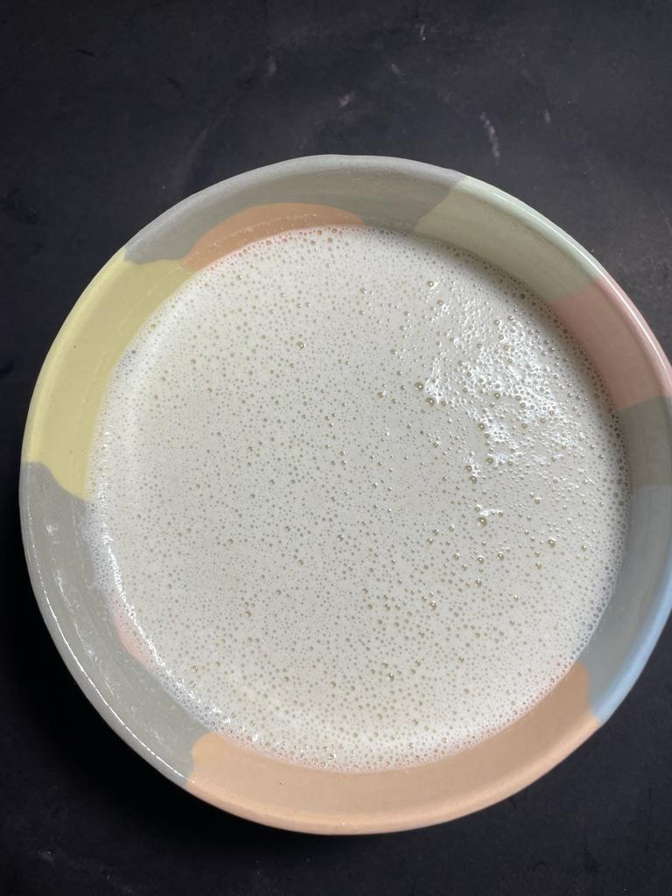

Bebibas vegetales
Bebida de almendras

Equipamiento
- Licuadora
- Bolsa de filtrado
Igredientes
- 100 gramos de almendras
- 1 litro de agua filtrada o mineral
- Pisca de sal
Procedimiento
- Tener al almendras remojadas al menos por 3 horas
- Colocarlas en un recipiente con agua bien caliente para poder quitarle la cascara
- Una vez sin cascara colocarlas en la licuadora con 1/2 litro de agua
- Mezclar bien y agregar el 1/2 litro de agua restante y las pisca de sal
- Luego filtrar la mezcla y colocar lo obtedido en una botella y refrigerar